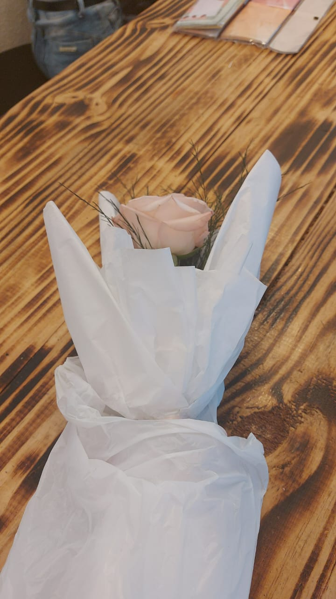
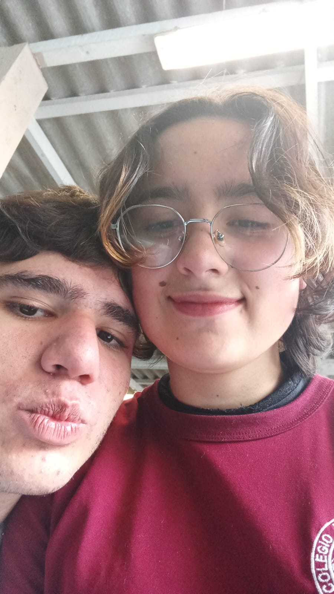
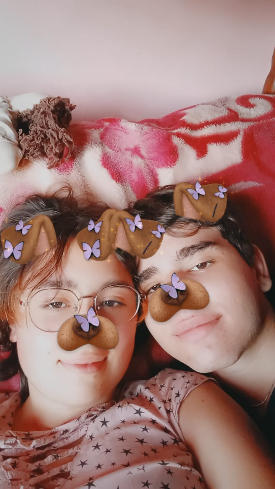

12/03/24
Como que você aceitou namorar comigo com esse pedido de namoro?
16/03/24
Mas como nem tudo são flores, nós éramos dois desconhecidos, pulamos a parte de ser amigos e fomos de desconhecidos para namorados, mas foi mágico, eu nunca vou esquecer, você era tão deslumbrante, uma deusa para alguém como eu.
26/03/24
O primeiro selinho nem foi avisado, você me pegou totalmente desprevenido, depois daquele dia, eu voltei para casa todo bobinho alegre e feliz, pois era uma coisa que eu já queria faz tempo, mas não tinha atitude, obrigado meu amor, prometo ter mais atitude...
31/08/24
Depois de 5 meses, nós finalmente nos beijamos, foi indescritivelmente mágico para mim, você tem os únicos lábios que eu quero beijar para o resto das nossas vidas.
Ao cruzar nossos olhos, acendeu-se uma chama,
Um brilho ardente que o coração reclama.
Pela primeira vez senti o que dizem ser amor,
E me entreguei ao instante, sem temor.
Em um momento inesperado, nossos lábios se encontraram,
Um toque suave entre sonhos e realidade.
Seu jeito único de ser me encanta,
Transformando meus dias cinzas em um campo florido.
Seus lábios me encantam como um feitiço profundo,
Nunca esquecerei a sensação do nosso primeiro beijo.
Nas curvas do seu corpo, me perco e me encontro,
Como se ele fosse magia, fazendo o mundo desaparecer.